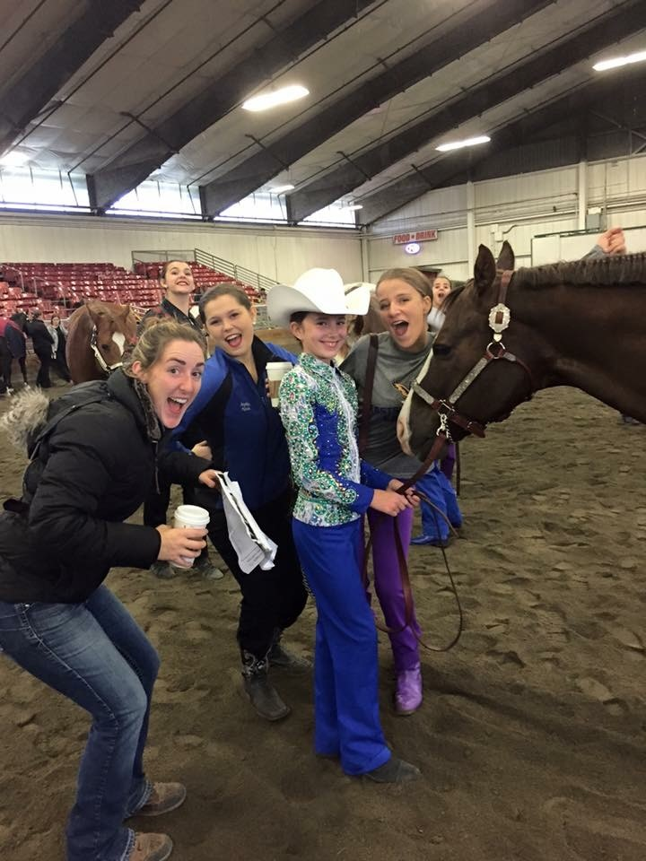
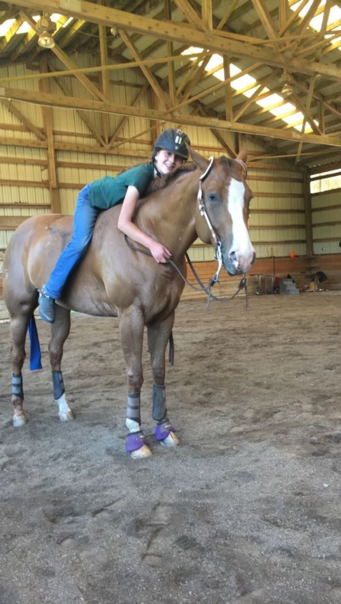

Gallery
I started riding when I was seven because I loved horses, but overtime it has become a lot more than that. I have developed
passion and a love for the sport, learned responsibility and hardwork, and gained an activity that my whole family loves.
This page showcases my journey and experiences with horses over the last 10 years.

I went to my first horse show when I was 10, and although I was very nervous,
my riding team and my family were there to support me, so I had a lot of fun and was
soon hooked on horse showing.

My family got Baylie when I was 11, and I struggled at first to get along with her,
but after a lot of hard work and bonding time, we now have a great relationship.
I even trust her enough to ride her without a saddle, pictured above from a few years ago.
I went to my first horse show when I was 10, and although I was very nervous,
my riding team and my family were there to support me, so I had a lot of fun and was
soon hooked on horse showing.